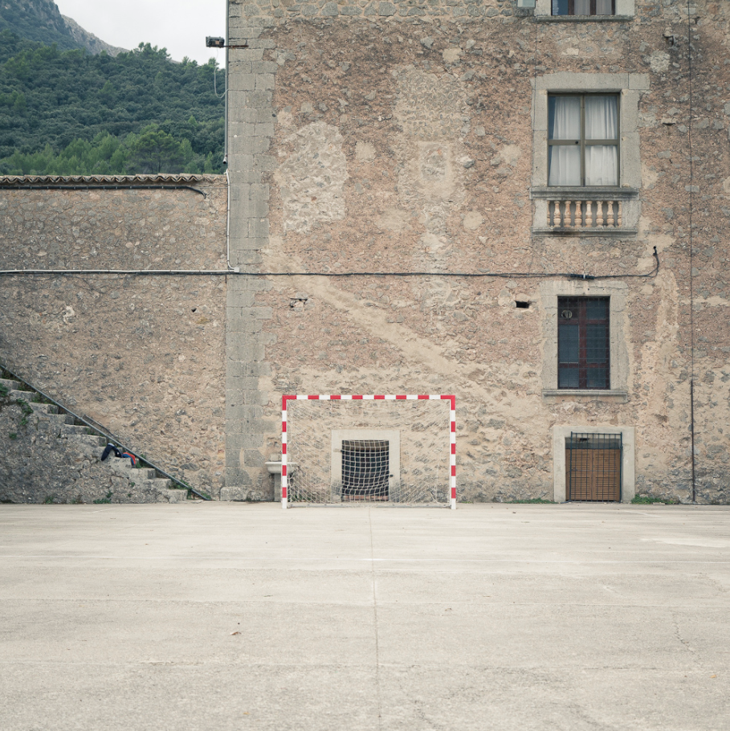
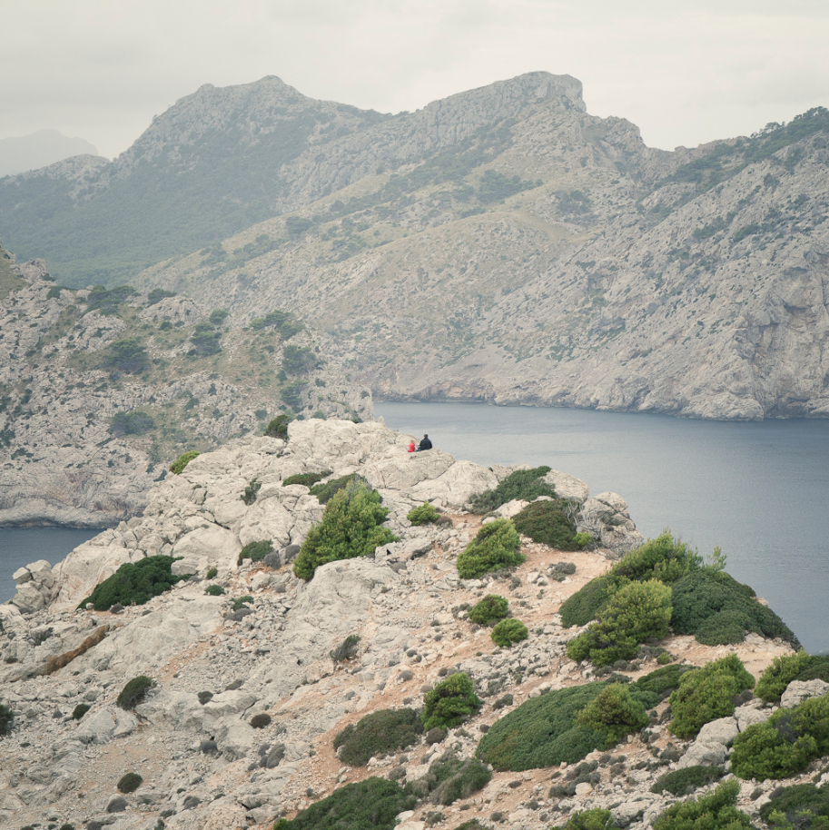
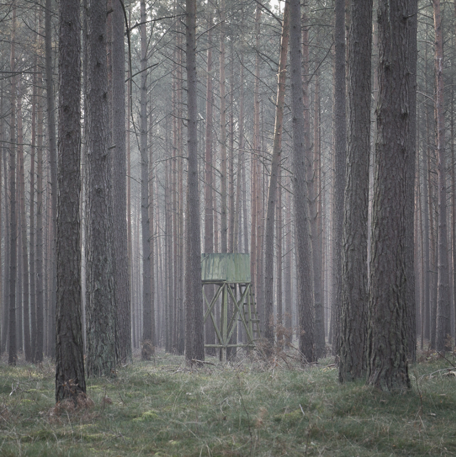

Matthias Werner
There is something captivating about the photography of German media designer Matthias Werner. The composition of each of the shots above bring life to the simple geometry and symmetry of ordinary objects. View more of his work on Flickr.